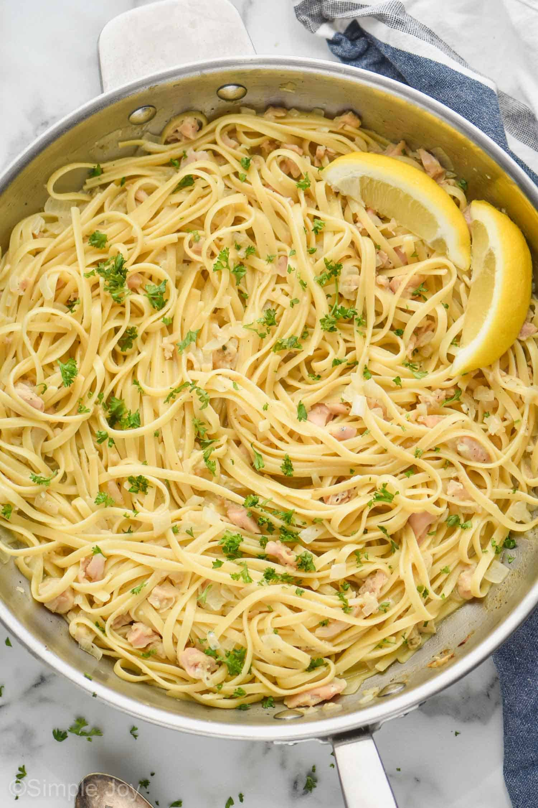

World's Best Clam Pasta

Description
This is the best clam pasta in the world.
Ingredients
- 1 pound linguine
- 6 tbsp extra-virgin olive oil
- 6 cloves garlic, coarsely chopped
-
1 cup dry white wine or vermouth, enough to make 2 cup of liquid with
clam juice
- 1/2 tsp red pepper flakes
- 2 can chopped clams, small
- 1 cup clam juice
- 1/4 cup plus 2 tbsp fresh flat-leaf parsley, finely chopped
- 3 tbsp unsalted butter
- 1/2 cup parmesan cheese
- 1/4 cup half & half
Steps
-
In a large pot over high heat, bring 4 quarts of water and 2 tbsp of
kosher salt to a boil. Add the linguine and cook according to package
directions.
-
Drain the clams a reserve clam juice. Add the vermouth or white wine to
the clam juice until a total of 2 cups of liquid.
-
While pasta is cooking, in a very large saute pan over medium-high heat,
heat the olive oil until hot but not smoking. Add the garlic and saute
until just golden, about 30 seconds. Add the clam juice/wine liquid, red
pepper flakes, parsley, 3/4 tsp kosher salt and bring to a simmer and
cook, covered, 6-8 minutes.
-
When pasta is within 2 minutes of being done, add the clams and half &
half to the clam broth and cook for 2 minutes.
-
Add drained pasta from a slotted spoon directly into clam broth and
stir.
- Turn heat off and add parmesan cheese.
- Serve with additional parmesan cheese sprinkled on top.